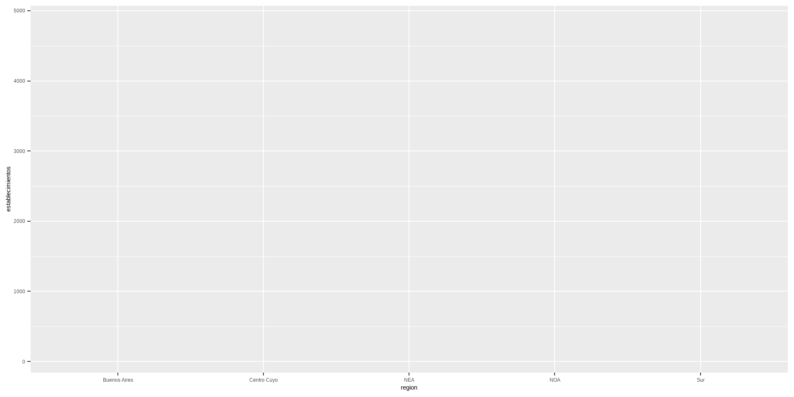
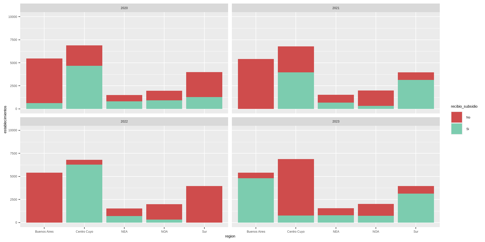
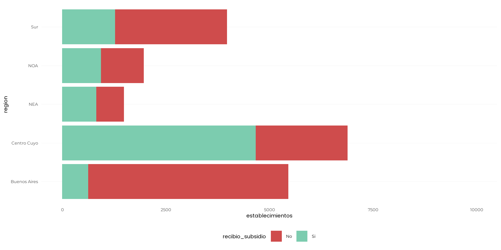
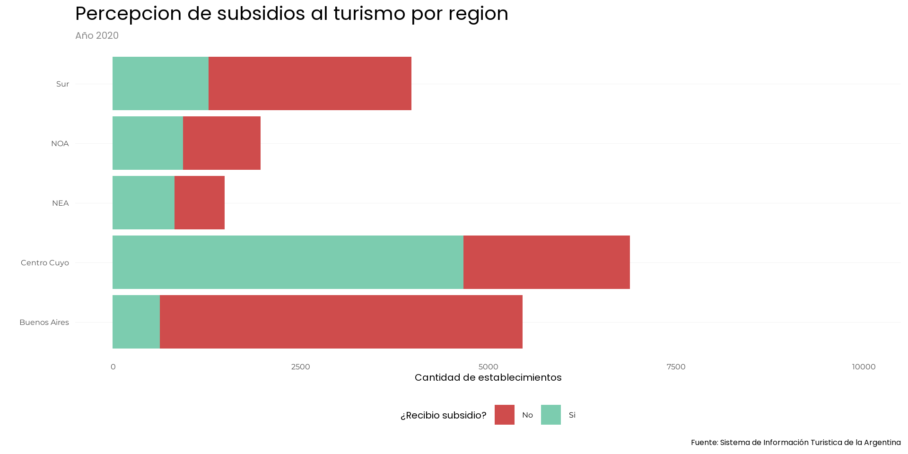
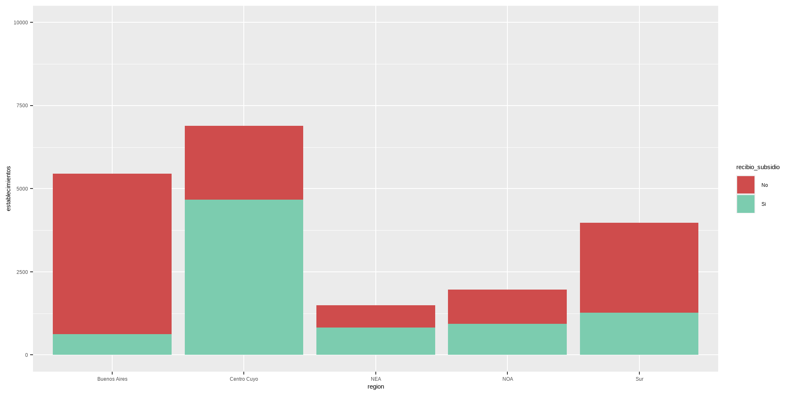

ggplot2 es una de las librerías que forman parte de tidyverse que nos permite crear gráficos, siguiendo una gramática o lógica por capas que se van sumando de manera incremental.
ggplot(data = df, aes(x= region , y = establecimientos))

ggplot es parte de tidyverse
Como ggplot es parte de tidyverse el argumento que vimos arriba podemos escribirlo encadenado dentro de una secuencia de pipes. Esto no es muy útil ya que si necesitamos hacer una transformación específica la podemos encadenar en esta secuencia donde ggplot es un paso más. Por ej. si queremos filtrar los datos solo para 2020 Por eso escribimos algo asi:
df %>%# hago las trasformaciones que necesitofilter(indice_tiempo ==2020) %>%#no necesito definir el parámetro data porque los datos ya estan dentro de la cadenaggplot(aes(x= region , y = establecimientos))
Layers o el gráfico en cuesti√≥n üìä
El núcleo de cualquier gráfico son las capas . Estas toman los datos mapeados y los muestran de forma comprensible para los humanos como una representación de los datos. Cada capa consta de tres partes importantes:
⏺️ La geometría que determina cómo se muestran los datos, como puntos, líneas o rectángulos.
Obviamente las barras no son la única geometría posibles. Podes consultar todas las geometrías posibles en la documentación sobre capas de ggplot. A grandes razgos podríamos decir que:
usamos geom_density()stat_density() para los gráficos de densidad
usamos geom_boxplot()stat_boxplot() para los gráficos de cajas o boxplot
geom_bar()geom_col()stat_count() son para las columnas y barras
geom_point() para los gráficos de dispersión de puntos
Layers: para que sirve _stats
Cada geom_*() viene con una función estadística por defecto o _stat. Esa función procesa tus datos antes de graficarlos.
En ggplot Hay dos tipos de gráficos de barras: geom_bar()y geom_col().
geom_bar() → usa stat = “count” (por defecto)
Cuenta la cantidad de casos de cada categoría.
No necesitás columna y, la calcula automáticamente.
starwars %>%ggplot(aes(x = gender)) +# cuenta cuántos varones y mujeres hay y ya.geom_bar()
geom_col() → usa stat = “identity” (por defecto)
Significa: “ya tengo la variable Y calculada, usala tal como está”.
Acá sí necesitás pasar y = en el aes().
starwars %>%group_by(gender) %>%summarise(average_height =round(mean(height,na.rm = T))) %>%# tengo dos variables clarasggplot(aes(x = gender, y= average_height )) +# detecta la columna average_height como la que tiene el cálculogeom_col()
Si quisieras usar geom_bar() con datos ya agregados, ahí sí tendrías que forzar stat = “identity”
Layers: Parametros de posisción
Dentro de la capa layer tro parámetro importante es la posición que ocupa una variable. El comportamiento de position va a cambiar según el tipo de gráfico o (para ponerlo en palabras de ggplot), la geometría, en el caso del gráfico de barras podemos mencionar las posiciones:
Dependiendo del tipo de escala vamos a usar diferentes tipos de funciones. Revisa la documentación de ggplot para conocer que tipo scale_y_binned(), scale_y_date(), scale_y_discrete()
Scales en funci√≥n de otra variable üå°Ô∏è
Podríamos seguir trabajando sobre la capa de escalas pero esta vez manipulando su color y usarlo como un termómetro. Para eso vamos a tener que hacer dos cosas:
df %>%ggplot(aes(x= region , y = establecimientos, fill = recibio_subsidio)) +geom_col(position ="stack")+scale_y_continuous(limits =c(0,10000),n.breaks =5) +scale_fill_manual(values=c("#cf4c4c","#7cccaf"))
facet_wrap(): Crea una grilla de gráficos en una sola dimensión (usualmente se enrolla en filas o columnas) y ideal para una sola variable de faceteo o agrupamiento.
facet_grid(): Crea una grilla de gráficos bidimensional (filas y columnas), ideal para dos variables de faceteo (una para filas y otra para columnas).
Facetado ➗
En este ejemplo agregamos una capa de facetado sobre la base completa (df) y facetamos segun el año
df %>%ggplot(aes(x= region , y = establecimientos, fill = recibio_subsidio)) +geom_col(position ="stack")+scale_y_continuous(limits =c(0,10000),n.breaks =5) +scale_fill_manual(values=c("#cf4c4c","#7cccaf"))+facet_wrap(~ indice_tiempo)

Capa de coordenadas
Si nos imaginamos el gráfico como un mapa podríamos decir que la capa de coordenadas es como el la direccion en que sostenemos ese mapa para interpretarlo.
Si bien se suelen utilizar coordenadas cartesianas, el sistema de coordenadas impulsa la visualización de proyecciones cartográficas (cuando graficamos mapas) y gráficos polares.
Si bien no es la capa que más vamos a usar al principio es probable que la función coord_flip te sea de utilidad para voltear los ejes de tu gráfico.
ggplot2 nos ofrece varios temas predeterminados para enchular nuestros gráficos como theme_grey() theme_gray() theme_bw() theme_linedraw() theme_light() theme_dark() theme_minimal() theme_classic()
df %>%filter(indice_tiempo ==2020) %>%ggplot(aes(x= region, y= establecimientos, fill = recibio_subsidio)) +geom_col(position ="stack")+scale_y_continuous(limits =c(0,10000),n.breaks =5)+scale_fill_manual(values=c("#cf4c4c","#7cccaf"))+coord_flip() +## elijo el theme lighttheme_minimal()
df %>%filter(indice_tiempo ==2020) %>%ggplot(aes(x= region, y= establecimientos, fill = recibio_subsidio)) +geom_col(position ="stack")+scale_y_continuous(limits =c(0,10000),n.breaks =5)+scale_fill_manual(values=c("#cf4c4c","#7cccaf"))+coord_flip() +## elijo el theme lighttheme_uflo()

Algunas extensiones de themes que podes usar son:
ggthemes tiene temas muy populares que por ej. imitan temas clasicos de graficos de Excel, Google docs, FiveThirtyEigh entre otros
ggdark: temas en modo escuro de los temas predeterminados de ggplot2.
ggtech: proporciona temas inspirados por compañías tecnológicas, como Airbnb, Google, Twitter o Facebook.
Anotaciones üóíÔ∏è
Si bien no se la menciona como capa en general las anotaciones son muy importantes cuando realizamos un gráfico. Dentro de las anotaciones tenemos varias funciones:
labs():Para etiquetar elementos del gráfico como title, subtitle, caption x, y (de los ejes) fill, color, size, shape, etc. (etiquetas especificas de leyendas)
anotate() Permite agregar texto, líneas, puntos, rectángulos, etc. en posiciones específicas del gráfico.
geom_curve() y geom_segment()Sirven para dibujar flechas, líneas o curvas que apunten a algo importante.
Anotaciones üóíÔ∏è
df %>%filter(indice_tiempo ==2020) %>%ggplot(aes(x= region, y= establecimientos, fill = recibio_subsidio)) +geom_col(position ="stack")+scale_y_continuous(limits =c(0,10000),n.breaks =5)+scale_fill_manual(values=c("#cf4c4c","#7cccaf"))+coord_flip() +theme_uflo()+labs(x="", y="Cantidad de establecimientos",title ="Percepcion de subsidios al turismo por region",subtitle ="Año 2020",caption ="Fuente: Sistema de Información Turistica de la Argentina", fill ="¿Recibio subsidio?")

Resumiendo…
ggplot es como una cebolla…
…. tiene capas
De datos…
df %>%# Transformo mis datos filter(indice_tiempo ==2020) %>%# Capa de mapeoggplot(aes(x= region, y= establecimientos, fill = recibio_subsidio)) +# Capa de geometriageom_col(position ="stack")
…escalas
df %>%# Transformo mis datos filter(indice_tiempo ==2020) %>%# Capa de mapeoggplot(aes(x= region, y= establecimientos, fill = recibio_subsidio)) +# Capa de geometriageom_col(position ="stack")+# Capas de escalasscale_y_continuous(limits =c(0,10000),n.breaks =5)+scale_fill_manual(values=c("#cf4c4c","#7cccaf"))
…coordenadas …
df %>%# Transformo mis datos filter(indice_tiempo ==2020) %>%# Capa de mapeoggplot(aes(x= region, y= establecimientos, fill = recibio_subsidio)) +# Capa de geometriageom_col(position ="stack")+# Capas de escalasscale_y_continuous(limits =c(0,10000),n.breaks =5)+scale_fill_manual(values=c("#cf4c4c","#7cccaf"))+# Capas de coordenadascoord_flip()
… y hermoseo.
df %>%# Transformo mis datos filter(indice_tiempo ==2020) %>%# Capa de mapeoggplot(aes(x= region, y= establecimientos, fill = recibio_subsidio)) +# Capa de geometriageom_col(position ="stack")+# Capas de escalasscale_y_continuous(limits =c(0,10000),n.breaks =5)+scale_fill_manual(values=c("#cf4c4c","#7cccaf"))+# Capas de coordenadascoord_flip() +# Capas de tematheme_uflo()+labs(x="", y="Cantidad de establecimientos",title ="Percepcion de subsidios al turismo por region",subtitle ="Año 2020",caption ="Fuente: Sistema de Información Turistica de la Argentina", fill ="¿Recibio subsidio?")

ü™Ñ Tuki
Y ahora lo usuarios de ggplot amamos
Extensiones!!!!
gganimate
library(gganimate)turismo_no_residente_por_anio_y_medio_trasporte %>%ggplot(aes(x = medio_de_transporte, y = viajes, fill = medio_de_transporte)) +geom_col(show.legend =FALSE) +labs(title ="Viajes en año: {as.integer(frame_time)}",x ="Medio de transporte",y ="Cantidad de viajes",caption ="Fuente: Sistema de Información Turistica de la Argentina") +transition_time(indice_tiempo_anio) +theme_minimal()